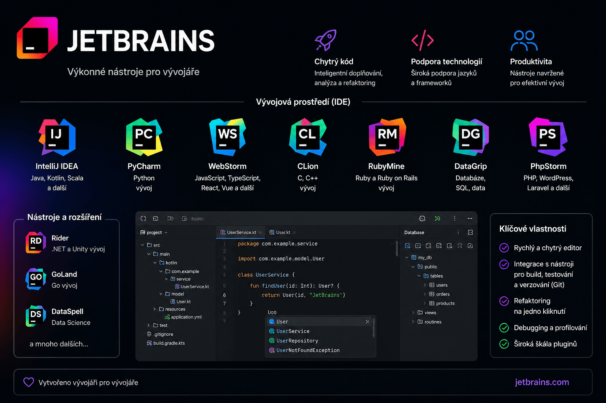

JetBrains Rider – Tipy a nástroje
Propojení s Androidem, XML komentáře, klávesové zkratky a regulární výrazy v JetBrains Rider.

Propojení s mobilním zařízením (Android)
Kompletní postup nastavení Android emulátoru
Nastavení BIOSu (AMD CPU) – BIOS → CPU konfigurace →
SVM: EnabledSpráva Android SDK v Rideru –
File → Project Structure → SDKs → Project→ nastav Android SDK. SDK lze stáhnout v Android Studio →More Actions → SDK Manager.Ověření základních komponent SDK (sekce
SDK Tools):Komponenta Popis Android SDK Built-ToolsSestavení aplikací Android SDK Command-Line ToolsSpráva SDK Android EmulatorTestování aplikací Android Emulator hypervisor driverVýkon emulátoru (Intel/AMD) Android SDK Platform-ToolsKomunikace s zařízeními ( adb)Nastavení proměnné prostředí:
C:\Users\<YourUsername>\AppData\Local\Android\Sdk\platform-toolsPříkazy ADB:
# Stav emulátorů adb devices # Restart ADB služby adb kill-server adb start-serverSpuštění – Android Studio →
More Actions → Virtual Device Manager→ spusť virtuální zařízení → v Rideru vyber zařízení.
XML komentáře
Zalomení řádku
Pro zalomení řádku v XML dokumentačním komentáři použij <para> </para>:
/// <summary>
/// Popis třídy nebo metody.
/// <para> </para>
/// <para>int PrimaryKey</para>
/// <para> </para>
/// <para>virtual Relation Relation</para>
/// </summary>
Warning
<para></para> ani <br/> pro zalomení řádku nefungují. Použij <para> </para>.
Více informací (Stack Overflow)
Klávesové zkratky
| Akce | Zkratka |
|---|---|
| Zobrazení informací o parametrech metody | Ctrl + Shift + Space |
| Procházení dopředu | Ctrl + Shift + Space |
| Procházení zpět | Ctrl + Shift + P |
Regulární výrazy
Číselná zachycená skupina
# Vyhledání
<h2>(.*?)</h2>
# Nahrazení
<h2>Test $1</h2>
Pojmenovaná zachycená skupina
# Vyhledání
<h2>(?<customName>.*?)</h2>
# Nahrazení
<h2>Test ${customName}</h2>